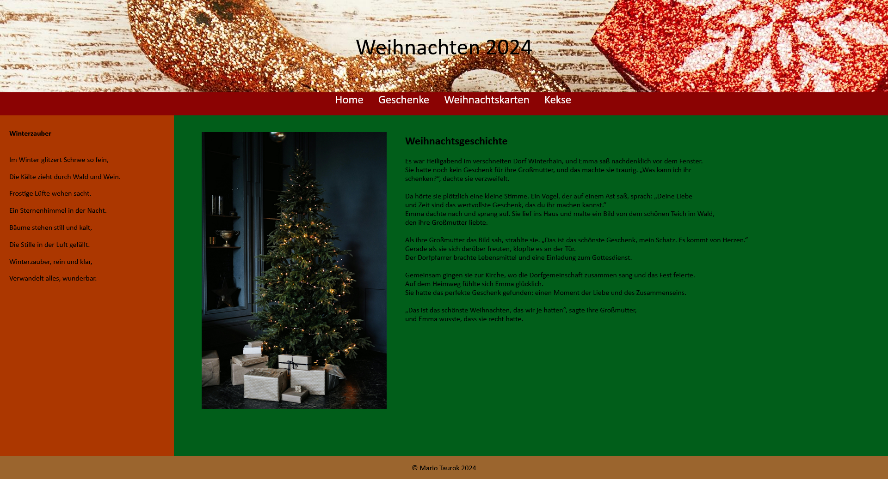

2025
Cloudflight Coding Contest
Teilnahme am Programmierwettbewerb mit Algorithmen und Problemlösung unter Zeitdruck.
Softwareentwickler in Ausbildung · HTL Wien West
HTL-Schüler aus Wien mit echter Leidenschaft für Technik, von eigenen Linux-Servern über C#-Spiele bis zur Webentwicklung. Ich suche einen Ferialjob in der IT, um praktisch dazuzulernen.
Über mich
In meiner Freizeit setze ich am liebsten Dinge um, die mich begeistern: einen eigenen Minecraft-Server auf einem Ubuntu-Root-Server, ein selbst programmiertes Spiel in C# und meine Website taurok.com. Besonders viel Spaß macht mir das Entwickeln mit KI-Agenten. Gleichzeitig will ich die Grundlagen dahinter richtig verstehen.
C# (.NET) · OOP · WPF-Desktop-Apps
HTML · CSS · KI-gestützte Entwicklung
Ubuntu · systemd · Shell-Skripte · Git/GitHub
Cisco Packet Tracer · TCP/IP · OSI-Modell
Projekte & Wettbewerbe
Klick auf ein Projekt für mehr Details.
 Privat
Privat
Eigener Ubuntu-Root-Server (netcup) inkl. systemd-Dienst und automatischem Backup-Skript.
Mehr erfahren →Eigene Domain, mit dem KI-Agenten Claude gebaut und live veröffentlicht.
Mehr erfahren →
HTLIm Medientechnik-Unterricht an der HTL gestaltet und umgesetzt.
Mehr erfahren →Teilnahme am Programmierwettbewerb mit Algorithmen und Problemlösung unter Zeitdruck.
Kontakt
Du suchst einen motivierten Ferialpraktikanten? Schreib mir gern.